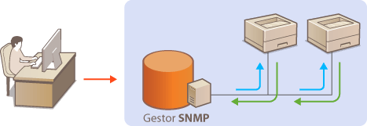
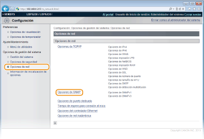
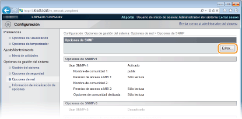
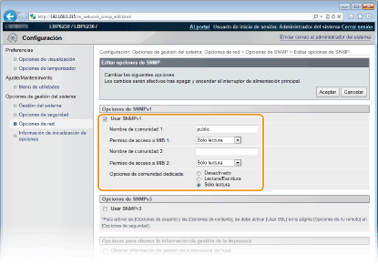
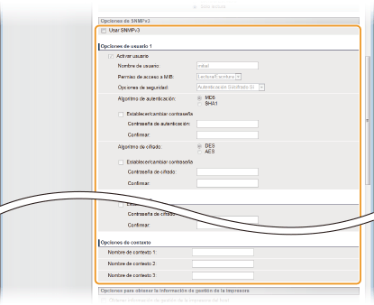
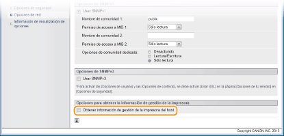
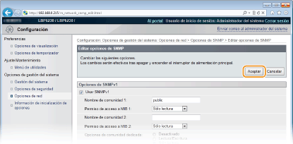

0KXF-02J
Protocolo simple de administración de redes (SNMP) es un protocolo para supervisar y controlar los dispositivos de comunicación de una red utilizando una Base de datos de información de administración (MIB). El equipo admite SNMPv1 y SNMPv3 con seguridad mejorada. Estos le permitirán consultar el estado del equipo desde un ordenador al imprimir documentos o al utilizar el IU remoto. Puede activar SNMPv1 o SNMPv3, o ambos al mismo tiempo. Especifique las opciones de cada versión según su entorno de red y el uso previsto.

SNMPv1
SNMPv1 utiliza información denominada una "cadena de comunidad" (en realidad un tipo de contraseña) para definir el ámbito de la comunicación SNMP. Dado que esta información está expuesta a la red como texto sin formato, la red será vulnerable a los ataques. Si desea garantizar la seguridad de la red, desactive SNMPv1 y utilice SNMPv3.
SNMPv3
Con SNMPv3, puede implementar la gestión de dispositivos de red protegida por sólidas funciones de seguridad. Para la configuración utilice el IU remoto. Antes de empezar, active SSL (Activación de la comunicación cifrada SSL para el IU remoto).
 |
|
El equipo no admite la función de notificación de capturas de SNMP.
Para cambiar los números de puerto de SNMP Cambios en los números de puerto
El software de gestión SNMP le permite configurar, supervisar y controlar el equipo de forma remota desde el ordenador donde se haya instalado el software. Para obtener más información, consulte los manuales de instrucciones del software de gestión.
|
1
Inicie el IU remoto e inicie sesión en modo Administrador del Sistema. Inicio del IU remoto
2
Haga clic en [Configuración].

3
Haga clic en [Opciones de red]  [Opciones de SNMP].
[Opciones de SNMP].

4
Haga clic en [Editar].

5
Especifique las opciones de SNMPv1.
Si no necesita cambiar las opciones de SNMPv1, continúe con el siguiente paso.

[Usar SNMPv1]
Seleccione la casilla de verificación para activar SNMPv1. Solo podrá especificar el resto de opciones de SNMPv1 una vez que se haya seleccionado esta casilla de verificación.
Seleccione la casilla de verificación para activar SNMPv1. Solo podrá especificar el resto de opciones de SNMPv1 una vez que se haya seleccionado esta casilla de verificación.
[Nombre de comunidad 1]/[Nombre de comunidad 2]
Introduzca hasta 32 caracteres alfanuméricos en el nombre de la comunidad.
Introduzca hasta 32 caracteres alfanuméricos en el nombre de la comunidad.
[Permiso de acceso a MIB 1]/[Permiso de acceso a MIB 2]
En cada comunidad, seleccione [Lectura/Escritura] o [Sólo lectura] para privilegios de acceso a objetos MIB.
En cada comunidad, seleccione [Lectura/Escritura] o [Sólo lectura] para privilegios de acceso a objetos MIB.
|
[Lectura/Escritura]
|
Permite visualizar y cambiar los valores de los objetos MIB.
|
|
[Sólo lectura]
|
Permite únicamente visualizar los valores de los objetos MIB.
|
[Opciones de comunidad dedicada]
La Comunidad dedicada es una comunidad preestablecida, destinada exclusivamente a los administradores que utilizan software de Canon, como imageWARE Enterprise Management Console. Seleccione [Desactivado], [Lectura/Escritura] o [Sólo lectura] para privilegios de acceso a objetos MIB.
La Comunidad dedicada es una comunidad preestablecida, destinada exclusivamente a los administradores que utilizan software de Canon, como imageWARE Enterprise Management Console. Seleccione [Desactivado], [Lectura/Escritura] o [Sólo lectura] para privilegios de acceso a objetos MIB.
|
[Desactivado]
|
No utilice la Comunidad dedicada.
|
|
[Lectura/Escritura]
|
Permite a la Comunidad dedicada visualizar y cambiar los valores de los objetos MIB.
|
|
[Sólo lectura]
|
Permite a la Comunidad dedicada únicamente visualizar objetos MIB.
|
6
Especifique las opciones de SNMPv3.
Si no necesita cambiar las opciones de SNMPv3, continúe con el siguiente paso.

[Usar SNMPv3]
Seleccione la casilla de verificación para activar SNMPv3. Solo podrá especificar el resto de opciones de SNMPv3 una vez que se haya seleccionado esta casilla de verificación.
Seleccione la casilla de verificación para activar SNMPv3. Solo podrá especificar el resto de opciones de SNMPv3 una vez que se haya seleccionado esta casilla de verificación.
[Activar usuario]
Seleccione la casilla de verificación para activar [Opciones de usuario 1]/[Opciones de usuario 2]/[Opciones de usuario 3]. Para desactivar las opciones del usuario, desmarque la casilla de verificación correspondiente.
Seleccione la casilla de verificación para activar [Opciones de usuario 1]/[Opciones de usuario 2]/[Opciones de usuario 3]. Para desactivar las opciones del usuario, desmarque la casilla de verificación correspondiente.
[Nombre de usuario]
Introduzca hasta 32 caracteres alfanuméricos en el nombre de usuario.
Introduzca hasta 32 caracteres alfanuméricos en el nombre de usuario.
[Permiso de acceso a MIB]
Seleccione [Lectura/Escritura] o [Sólo lectura] para privilegios de acceso a objetos MIB.
Seleccione [Lectura/Escritura] o [Sólo lectura] para privilegios de acceso a objetos MIB.
|
[Lectura/Escritura]
|
Permite visualizar y cambiar los valores de los objetos MIB.
|
|
[Sólo lectura]
|
Permite únicamente visualizar los valores de los objetos MIB.
|
[Opciones de seguridad]
Seleccione [Autenticación Sí/cifrado Sí], [Autenticación Sí/cifrado No] o [Autenticación No/cifrado No] en la combinación de opciones de autenticación y cifrado que desee.
Seleccione [Autenticación Sí/cifrado Sí], [Autenticación Sí/cifrado No] o [Autenticación No/cifrado No] en la combinación de opciones de autenticación y cifrado que desee.
[Algoritmo de autenticación]
Si [Opciones de seguridad] se ha establecido en [Autenticación Sí/cifrado Sí] o [Autenticación Sí/cifrado No], seleccione [MD5] o [SHA1] como algoritmo de autenticación, en función de su entorno.
Si [Opciones de seguridad] se ha establecido en [Autenticación Sí/cifrado Sí] o [Autenticación Sí/cifrado No], seleccione [MD5] o [SHA1] como algoritmo de autenticación, en función de su entorno.
[Algoritmo de cifrado]
Si [Opciones de seguridad] se ha establecido en [Autenticación Sí/cifrado Sí], seleccione [DES] o [AES] como algoritmo de cifrado, en función de su entorno.
Si [Opciones de seguridad] se ha establecido en [Autenticación Sí/cifrado Sí], seleccione [DES] o [AES] como algoritmo de cifrado, en función de su entorno.
[Establecer/cambiar contraseña]
Para configurar o cambiar la contraseña, seleccione la casilla de verificación e introduzca entre seis y 16 caracteres alfanuméricos para la contraseña en el cuadro de texto [Contraseña de autenticación] o [Contraseña de cifrado]. Para la confirmación, introduzca la misma contraseña en el cuadro de texto [Confirmar]. Las contraseñas pueden configurarse de forma independiente para los algoritmos de autenticación y cifrado.
Para configurar o cambiar la contraseña, seleccione la casilla de verificación e introduzca entre seis y 16 caracteres alfanuméricos para la contraseña en el cuadro de texto [Contraseña de autenticación] o [Contraseña de cifrado]. Para la confirmación, introduzca la misma contraseña en el cuadro de texto [Confirmar]. Las contraseñas pueden configurarse de forma independiente para los algoritmos de autenticación y cifrado.
[Nombre de contexto 1]/[Nombre de contexto 2]/[Nombre de contexto 3]
Introduzca hasta 32 caracteres alfanuméricos en los nombres de contexto. Es posible registrar hasta tres nombres de contexto.
Introduzca hasta 32 caracteres alfanuméricos en los nombres de contexto. Es posible registrar hasta tres nombres de contexto.
7
Especifique las opciones de adquisición de información de gestión de la impresora.
Con SNMP, la información de gestión de la impresora (por ejemplo, los protocolos de impresión y los puertos de la impresora) puede supervisarse y obtenerse con regularidad con la ayuda de un ordenador en red.

[Obtener información de gestión de la impresora del host]
Seleccione la casilla de verificación para activar la supervisión de la información de gestión de la impresora del equipo a través de SNMP. Para desactivar la supervisión de la información de gestión de la impresora, desmarque la casilla de verificación.
8
Haga clic en [Aceptar].

9
Reinicie el equipo.
Apague el equipo, espere al menos 10 segundos y vuelva a encenderlo.
 |
|
Desactivación de SNMPv1 y SNMPv3
Si ambas versiones de SNMP se desactivan, algunas funciones del equipo no estarán disponibles como, por ejemplo, obtener información del equipo a través del controlador de impresora.
|
|
Activación de SNMPv1 y SNMPv3
|
|
Si ambas versiones de SNMP están activadas, se recomienda establecer el permiso de acceso a MIB de SNMPv1 en [Sólo lectura]. El permiso de acceso a MIB puede establecerse de forma independiente en SNMPv1 y SNMPv3 (y para cada usuario en SNMPv3). Si selecciona [Lectura/Escritura] (permiso de acceso completo) en SNMPv1 se invalidan las sólidas opciones de seguridad que caracterizan a SNMPv3, ya que la mayoría de las opciones del equipo pueden controlarse con SNMPv1.
|